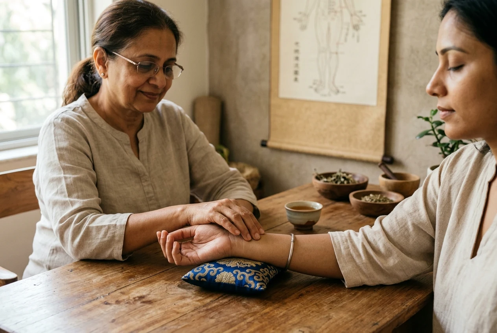

An independent practice centered on attentive diagnostic care.
Athmease Nature Cure Clinic was founded in Kolathur, Chennai, by Dr. Shirly Annes.S to provide an authentic, calm space where individuals receive rigorous, drugless clinical therapy and personalized restorative guidance.
Dr. Shirly Annes.S
Fellowship in Advanced Acupuncture
Dr. Shirly Annes.S is a formally certified practitioner in the classical Indian systems of Naturopathy and Yogic Sciences, having completed the rigorous full-time BNYS medical curriculum. To deepen her clinical efficacy in pain management and neuromuscular rehabilitation, she undertook specialized postgraduate training resulting in a Fellowship in Advanced Acupuncture.
In her daily outpatient consultations at Athmease Nature Cure Clinic, Dr. Shirly Annes emphasizes the clinical synergy between precise meridian stimulation and systemic biological detoxification. She approaches health challenges not in isolation, but by examining the patient's digestive rhythm, autonomic nervous balance, structural alignment, and mental clarity.
Every treatment plan is tailored individually. Whether addressing chronic musculoskeletal discomfort, digestive sluggishness, hormonal irregularities, or chronic fatigue, the clinical focus remains steadfast: activating the body’s intrinsic healing mechanisms without dependence on synthetic medications.
The Four Tenets of Athmease
A healthcare philosophy grounded in patience, safety, and biological self-regulation.
Unrushed Clinical Inquiry
We allocate dedicated consultation time for thorough pulse, meridian, and constitutional evaluation. Understanding the genesis of discomfort comes before any procedural intervention.
Non-Invasive Biological Care
Our therapies utilize natural elements—water, botanical packs, therapeutic movement, medical ozone, and sterile hair-thin acupuncture needles—to stimulate systemic homeostasis without pharmacological burden.
Restoring Innate Equilibrium
Rather than masking symptoms temporarily, we support the body's natural excretory and nervous channels to clear metabolic sluggishness and restore optimal cellular vitality.
Patient Education & Rhythm
Healing is sustained through daily habit. Every patient receives realistic lifestyle counsel covering circadian eating routines, stress mitigation, and restorative yogic breathing.
A quiet, focused sanctuary in Kolathur.
Located on 7th Cross Street in Poompuhar Nagar, Kolathur, Athmease Nature Cure Clinic provides a quiet respite from urban noise. The facility is equipped with dedicated acupuncture treatment tables, botanical apothecary rooms, hygienic clinical equipment, and calming consultation spaces.
Clean linens, sterilized single-use filiform needles, and pure natural daylight ensure an environment where patients feel secure, respected, and listened to.
View Available Treatments
Consult with Dr. Shirly Annes.S
Visit Athmease Nature Cure Clinic in Kolathur, Chennai, for an attentive clinical evaluation and customized treatment program.